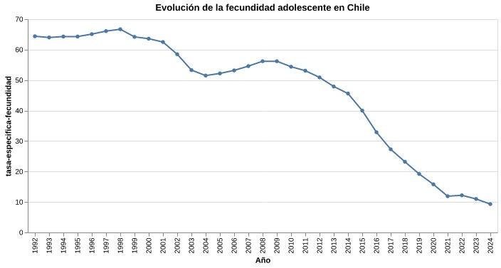
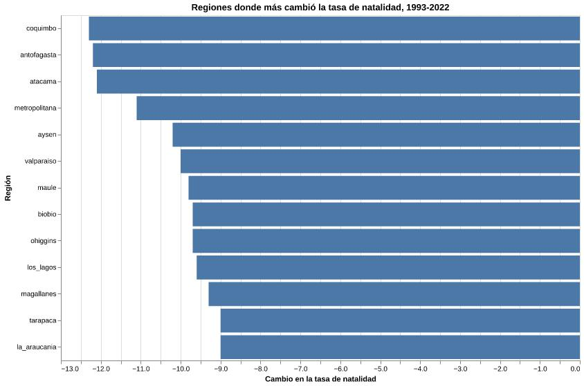
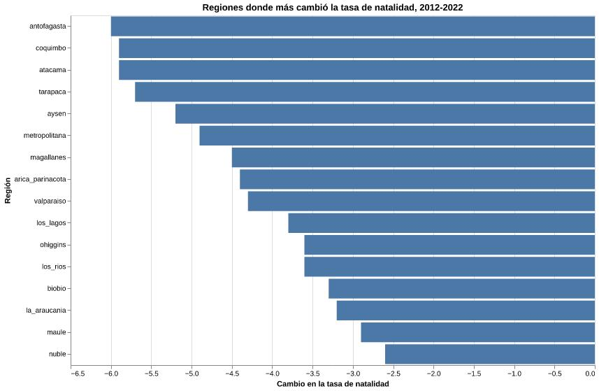

Las nuevas formas de maternidad
La baja de la natalidad no cuenta una sola historia
Durante las últimas décadas, Chile ha registrado una disminución sostenida de nacimientos. Sin embargo, mirar solo la cifra total deja fuera una parte importante del fenómeno: también han cambiado las edades en que las mujeres tienen hijos, la maternidad adolescente, las diferencias entre regiones y la presencia de madres extranjeras en ciertos territorios.
Esta webstory recorre esos cambios para entender la natalidad no solo como una caída demográfica, sino como una transformación social amplia.
Esta webstory parte de una hipótesis: la baja natalidad en Chile no se explica solo por una disminución general de nacimientos, sino por cambios más amplios en las edades reproductivas, las diferencias territoriales, la maternidad adolescente y las condiciones sociales que influyen en la desición de tener hijos.
Una caída que se ve en todos los indicadores
Entre 1992 y 2024, los principales indicadores de natalidad en Chile disminuyeron de forma marcada. La baja aparece en el promedio de hijos por mujer, en los nacimientos por cada mil habitantes y en la cantidad total de nacidos vivos.

La comparación permite dimensionar la magnitud del fenómeno. No se trata únicamente de una baja en los nacimientos, sino de una tendencia que también aparece en el promedio de hijos por mujer y en la tasa de natalidad por cada mil habitantes.
La fecundidad adolescente también se desplomó
La fecundidad adolescente muestra una de las caídas más notorias. Desde fines de los años noventa, la tasa empezó a disminuir de forma sostenida, con una baja especialmente marcada desde mediados de la década de 2010.

La caída de la fecundidad adolescente permite observar que el cambio no se expresa solo en la cantidad total de nacimientos, sino también en las edades en que ocurre la maternidad.
La caída no fue igual en todas las regiones
La disminución de la natalidad también puede observarse desde una mirada territorial. Algunas regiones registraron caídas más fuertes que otras, lo que muestra que el fenómeno no se expresa de la misma manera en todo el país.


El primer gráfico compara la evolución entre 1993 y 2022 únicamente para las regiones históricas que ya existían al inicio del período de análisis. El segundo compara el período 2012 y 2022, incorporando la totalidad de las regiones del país, ya que para ese momento todas las regiones actuales estaban oficialmente creadas. Esta decisión metodológica permitió realizar comparaciones más precisas y evitar interpretaciones erróneas derivadas de cambios administrativos del territorio nacional.
El norte muestra otra parte de la historia
La nacionalidad de la madre agrega una nueva dimensión al análisis de la natalidad. En algunas regiones del norte, la presencia de madres extranjeras representa una proporción importante de los nacimientos.
Este dato permite mirar el fenómeno con más detalle: mientras el país registra una disminución general de nacimientos, ciertas zonas también reflejan cambios asociados a la migración y a la composición de su población. Por eso, analizar la natalidad desde el territorio ayuda a entender que no se trata solo de cuántos niños nacen, sino también de quiénes son las madres y en qué contextos ocurre la maternidad.
¿Por qué importa?
La baja natalidad no es solo una cifra demográfica. También abre preguntas sobre el futuro del país, el envejecimiento de la población, los cuidados, la educación, la salud y las políticas públicas necesarias para acompañar estos cambios. Si nacen menos niños y aumenta el peso relativo de las personas mayores, Chile tendrá que enfrentar nuevas demandas sociales y repensar cómo organiza sus sitemas de apoyo.
Además, los datos muestran que este fenómeno no se expresa de una sola manera. La caída aparece en los indicadores generales, en la fecundidad adolescente, en las diferencias regionales y en la composición de los nacimientos según la nacionalidad de la madre. Por eso, no se trata únicamente de que Chile tenga menos nacimientos, sino de que también están cambiando las condiciones y formas en que las personas proyectan la maternidad, la familia y el futuro.
El tema ya llegó a la agenda pública
La caída de la natalidad no solo aparece en los datos: también se instaló como un problema de política pública. En 2026, el Gobierno presentó el Plan Chile Renace y convocó una Comisión Asesora Presidencial para abordar la crisis de natalidad en el país.
El plan busca mirar las barreras que enfrentan las personas que quieren tener hijos. Entre ellas se encuentra, el costo de la vida, el acceso a la vivienda, los sistemas de cuidados, la corresponsabilidad, la conciliación entre trabajo y familia, la salud reproductiva y los cambios culturales vinculados a la formación de familias.
Este contexto muestra que la baja natalidad dejó de ser solo una tendencia demográfica y pasó a formar parte del debate público. Sin embargo, también abre una pregunta clave: si el fenómeno responde a condiciones sociales, económicas y culturales más amplias, las políticas públicas no pueden limitarse a incentivar nacimientos, sino que deben mirar las condiciones reales en que las personas proyectan la maternidad, la paternidad y la vida familiar.
Metodología y fuentes
Esta investigación fue construida a partir de datos del Instituto Nacional de Estadísticas (INE) y del Departamento de Estadísticas e Información de Salud (DEIS).
Las bases fueron limpiadas y organizadas para analizar la evolución de los nacimientos, la tasa global de fecundidad, la maternidad adolescente, las diferencias territoriales y la nacionalidad de la madre.
Las visualizaciones fueron elaboradas utilizando Python, Pandas, Altair, HTML y CSS. Para contextualizar la discusión actual, también se revisaron antecedentes sobre el Plan Chile Renace.